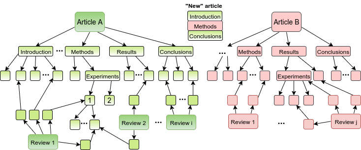
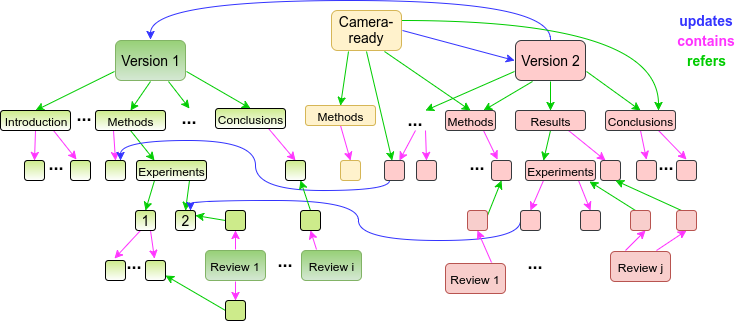
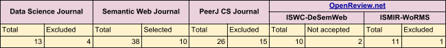

Linkflows updates
11th March 2019
Project updates
- Main research direction
- Linkflows model
- Dataset
- Research strategy and experiments
- Next steps
Research question
How can we model the [decentralized] execution of workflows by using Linked Data principles and tools?General idea
Linkflows model
Ontologies used
- PROV-O: Provenance Ontology
- SPAR suite: ontologies for the publishing domain
- FAIR*reviews ontology
- Web Annotation Data Model
- and others...
Linkflows model in a nutshell
- Actors: authors, peer-reviewers, editors, other
- Target: root, intermediary, leaf
- Aspect: syntax, style, content
- Impact: 1 to 5
- Action type: suggestion, no_action_needed, needs_to_be_addressed
- Sentiment: positive, balanced/neutral, negative
- Action: add, remove, modify
- Reply: agree, dismiss, ignore
- Response: addressed, not_addressed, partially_addressed
Can we automate the editing process?
- Can we define a complete and precise model of editing actions?
- Can the model be applied automatically? And to what degree?
Dataset

Linkflows model evaluation
- Granular reviews address snippets of text
- The chain of changes that one or more reviews launched
- Sentiment of a review: positive, neutral, negative
- "Ground truth": peer-review rating of own written review
- Use crowd/experts to see if reviews were addressed
Future work
- Finish conducting experiments
- Refine model
- Build interface(s)
- Proof of concept implementation
- Write it all up!!!